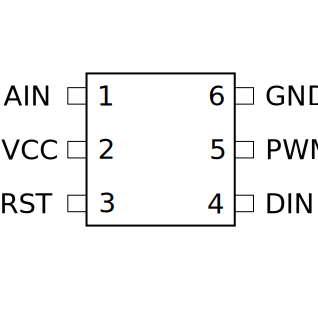
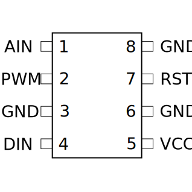
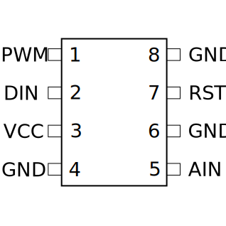
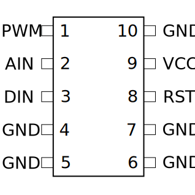
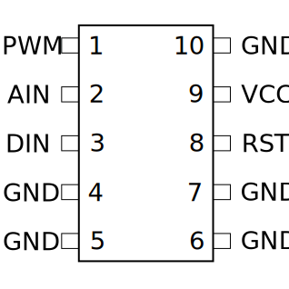
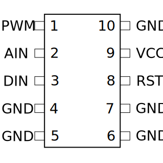
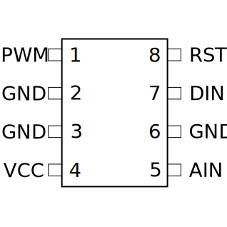
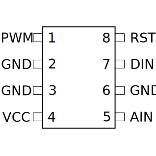
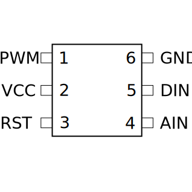
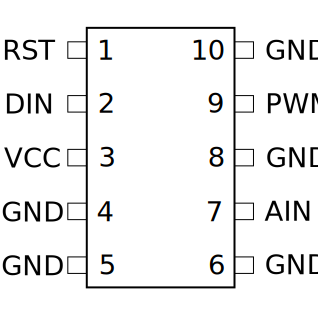

On the Subject of Microcontrollers
It's called "micro"-controller yet this thing in there is pretty big. Probably because it can cause a pretty big explosion...
- Use the controller's imprinted type and its size to determine its pin configuration with the diagrams below.
- The white mark on the controller indicates where the pin with the number 1 is located. The other pins are in ascending order on the side with the number 1 and then continued backwards on the other side.
- Using the table below determine the correct color code for each connected element.
- For each pin choose the correct element by pressing the UP and DOWN buttons and confirming your input with the OK button (the next pin will be selected automatically).
Pin Configurations
Strike (STRK) Controller:



Diode (LEDS) Controller:

 


Countdown (CNTD) Controller:
 

continued on next page ...
Explosion (EXPL) Controller:


Component Color Codes
| Input Voltage (VCC) | Analog Input (AIN) | Digital Input (DIN) | Pulse Width Modulation (PWM) | Reset (RST) | |
|---|---|---|---|---|---|
| If the last digit of the controller's serial number is 1 or 4 | Yellow | Magenta | Green | Blue | Red | Otherwise, if there is a lit indicator "SIG" or a RJ-45 port | Yellow | Red | Magenta | Green | Blue | Otherwise, if the bomb's serial number contains C, L, R, X, 1 or 8 | Red | Magenta | Green | Blue | Yellow | Otherwise, if the second numerical digit of the controller's serial number matches the number of batteries on the bomb | Red | Blue | Yellow | Green | Magenta | Otherwise | Green | Red | Yellow | Blue | Magenta |